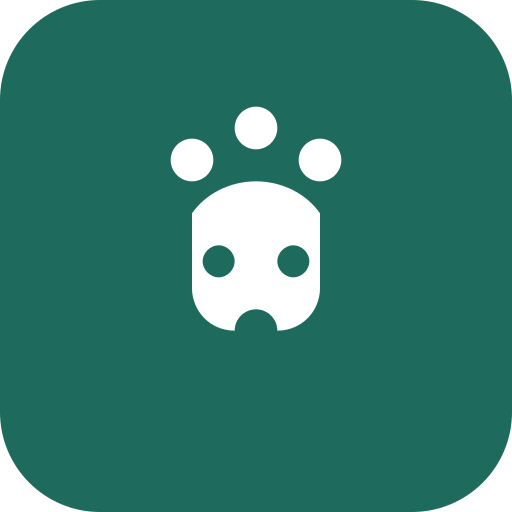

Capstone projectLitterSense Web App
An IoT-connected web app for monitoring cats' litter box activity. Our capstone brings together cat profiles, visit tracking, sensor readings, and health reports in one dashboard.
See screenshots & details for LitterSense